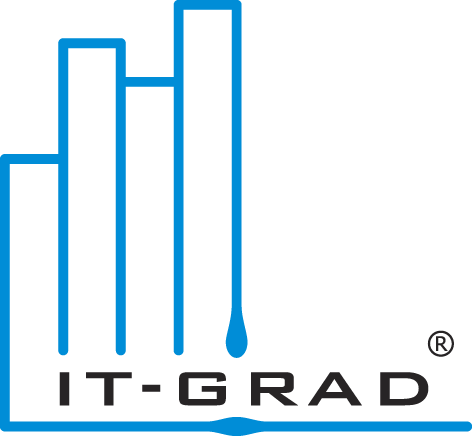

- +7 495 748-05-77
- +7 812 313-88-15
- 8 800 700-44-68служба поддержки
Гибкое решение для создания собственного парка виртуальных серверов.
Предоставление доступа к настольным компьютерам из облака.
Cертифицированный облачный PCI DSS хостинг и администрирование
Корпоративное решение для резервного копирования в наше облако виртуальных серверов
25.11
Облачный ЦОД: как проверить надежность дата-центра при выборе IaaS-провайдера
Когда вы выбираете облачного провайдера под проект IaaS, основное внимание уделяется характеристикам самого облака. Вы уточняете время доступности сервисов, гарантированные параметры производительности, возможности расширения набора облачных ресурсов и т. п. Но за любым виртуальным облаком кроется реальное оборудование, установленное в четырех стенах на некой территории. И от надежности всей этой «фоновой» инфраструктуры в значительной степени зависит надежность «фоновой» инфраструктуры в значительной степени зависит надежность нового разворачиваемого в облаке сервиса.
Так как облачные вычисления привлекают не только маленькие компании с невысокой зависимостью от ИТ, но и действительно крупные корпорации с полностью «цифровыми» бизнес-направлениями, ко всем компонентам стоит отнестись особенно внимательно. Дело в том, что облачный провайдер часто оперирует характеристиками собственных сервисов, декларируя тот или иной уровень надежности (привычные нам «девятки»).
Павел Власов, директор "Информационные Сервисы ЖКХ"
"За время работы с командой "ИТ-град" выясвлены следующие преимущества используемых услуг: доступность, цена, гибкость и мощность самой платформы VMWare. Удобно делать обновления наших систем, предварительно либо делая полный backup виртуальной машины, либо snapshot с возможностью очень быстрого отката ...
Delivery Club: как облако IaaS помогает в организации сервиса по заказу доставки еды